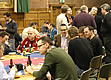
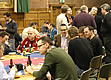

Terms and Conditions
Leading a session
Fees/Payment
Those leading a session (provided they were the first or second named presenter) will qualify for free attendance at the conference. They must however register on the website by 31st January 2010 to claim this free place. Sesison leaders are encouraged to attend the whole conference given the highly interactive nature of the event.
Joint/multiple proposals
While potential session leaders are invited to submit as many proposals as they wish, they should be aware that we will limit the number of proposals accepted from an individual or group in the interest of maintaining a balanced programme.
If a session has more than two leaders, then only the first two named leaders will qualify for a free place. Conditions of inclusion in programme
- Final acceptance of proposal will be at the complete discretion of the Programme Chair.
- By agreeing to have the session included in the programme the session leader is committing to:
- Register their conference booking before 31st January 2010
- Participate in the shepherding process to ensure high session quality
- Supply all materials relating to the session by 21st January 2010
- The session leader grants the SPA Specialist Group the right to reproduce and distribute (in printed, on-line and CD formats) all materials submitted for the session. The copyright of the materials remains with the original copyright holder. Where copyright is held by a person other than the session leader, it is the session leaders responsibility to ensure appropriate permission to use is secured.
- In the unlikely event that Programme Chair, at their absolute discretion, decides that the session leader has not complied with these terms and conditions, they may remove the session from the Programme. The session leader may no longer then be eligible for reduced rate participation in the conference and thus will be given the option of either a refund of any fees paid or the option to pay the additional fees necessary to allow them to continue to participate.
Participating in the Conference
Making and paying for a booking
- There are a limited number of participant places available for the conference. Bookings are processed in the order they are received and a booking has not be accepted by SPA Specialist Group until a confirmation email has been sent.
- Those booking at a rate other than "standard" may need to provide additional information to verify that they qualify for that rate. This may include BCS or SPA membership numbers, a purchase order from recognised educational establishment etc.
-
Due to the limited number of places available on this event, where a delegate would need a UK Visa to enter the UK, the booking will only be accepted upon receipt of proof that the delegate is already in possession of a valid UK Visa. We reserve the right to verify any delegates immigration status prior to accepting a booking.
- By placing a booking, the participant has agreed to the terms and conditions listed here.
- Booking should normally be accompanied by payment, either by Credit/Debit Card or via cheque or money order made payable to BCS SPA Specialist Group.
- All payments must be received before the conference.
- Invoices may be issued but normally require an official company order number. Once issued, an invoice remains payable regardless of and subject to our cancellation policies. (i.e. Canceling a booking not yet paid for does not negate the need to pay for it! A partial credit note may be issued against the invoice in line with our Cancellations and Refunds policy).
- All invoices must be paid within 30 days. The SPA Specialist Group reserves the right to charge interest on weekly basis on overdue invoices at the published Lloyds TSB Base Rate + 1%.
- Once a booking has been made, any early-bird discount can only be secured by full-payment before the relevant early-bird deadlines
Accommodation and meals
The conference does NOT provide any overnight accommodation. Lunch will be provided on each day. Some evening social activities include light buffets but participants should expect to purchase all meals except lunch.
Cancellation And Refunds
All bookings at the conference are subject to our standard Cancellations and Refunds Policy.
Delegates with Special Needs
The SPA conference aims to be fully accessible to all its delegates. Please call the conference administrators to discuss any specific needs before booking.
Data Policies
Conference participants and others registered with this website are advised that information they provide will be held on computer databases for administrative purposes. Summary information, including contact data, will be published on the SPA Conference website for all session leaders. Other participants may opt-out of having this information published. Information about participants (but not other registered users of this website) will be made available to other organisations involved in organising the conference. The SPA Specialist Group will use the contact information given by users of the website to contact them regarding SPA Specialist Group events including future conferences. Users can request that their data is not used for direct marketing purposes by either the SPA Specialist Group or third parties by contacting
Other
The SPA Specialist Group is not responsible for the views or opinions expressed by individual session leaders, contributors to the SPA wiki, or any individuals who are not members of the executive committee.